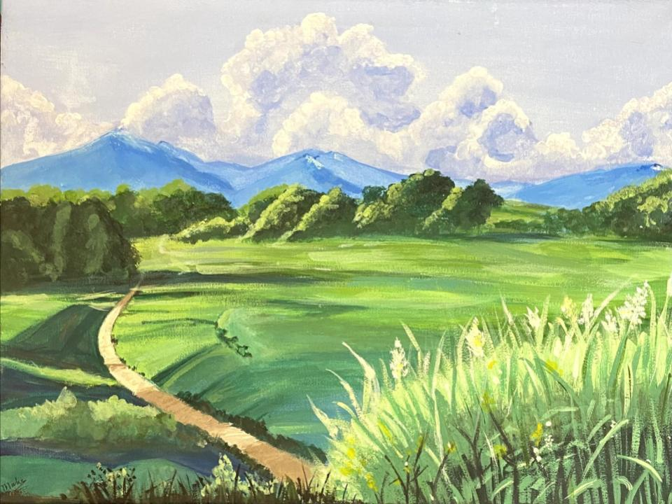
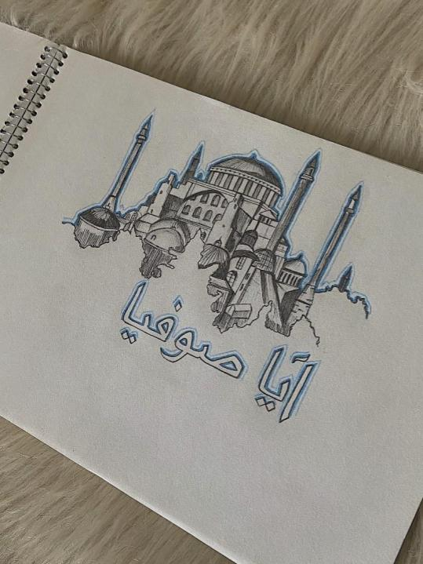
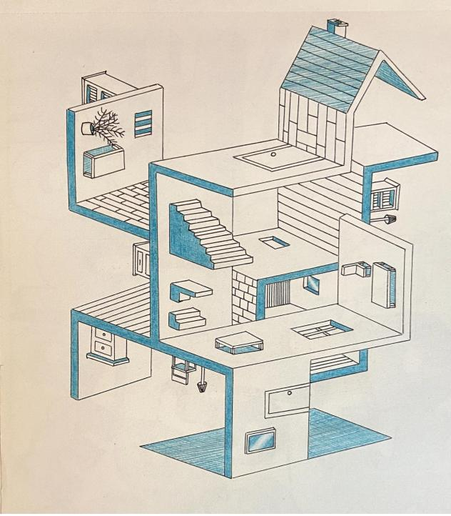
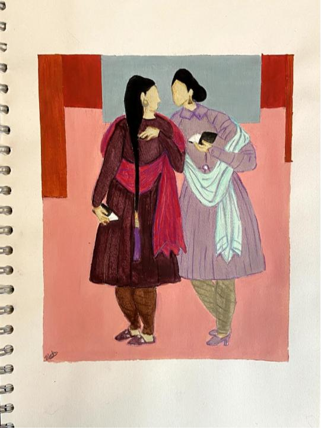

The Land in the Hands of its Owners

In quad 3, I had art as one of my subjects. Our main topic was "Expressions of First Nations Métis and Inuit Cultures." This art piece is my first time
painting since 2013. In 2013, I ultimately gave up on painting because I severely lacked the skills. However, after so many years of doing art once in a while,
I have gained some necessary skills needed to paint. This painting represents how land used to be before Europeans colonized it. This piece helped me get back
into painting and encouraged me to keep trying.
Hagia Sophia

I did this art piece after I binge-watched "Rise of Empires: Ottoman." The show was one of the best shows I have watched, and the cinematography was outstanding.
The primarly building shown in the show was Hagia Sophia. The show portrayed it as something magical and intensely desirable. Therefore, while I was obsessed with the
show, I decided to put my short-lasted obsession into a piece of architectural work.
Home

During my architect phase, I was obsessed with obscure buildings. Therefore, this piece took a while because I wanted it to look simple. I took heavy inspiration
from an image on Pinterest and put my spin on it as well.
Untitled piece by Abdur Rahman Chughtai

After a three-year break from drawing people, I felt like trying again a few weeks ago. This art piece is a distinctive painting style influenced by Mughal art.
The painter of this piece is Abdur Rahman Chughtai, a renowned and intellectual artist from Pakistan. Mughul-era paintings have been a massive interest of mine,
and hopefully, I will recreate one in the future. This piece makes me feel nice because the women are wearing cultural clothing, shalwar kameez, and I like that.